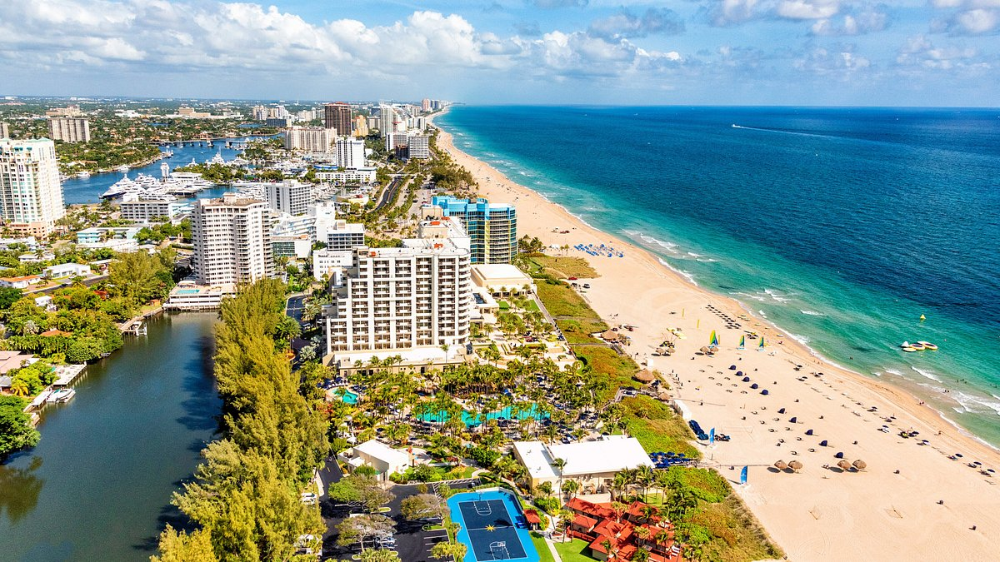
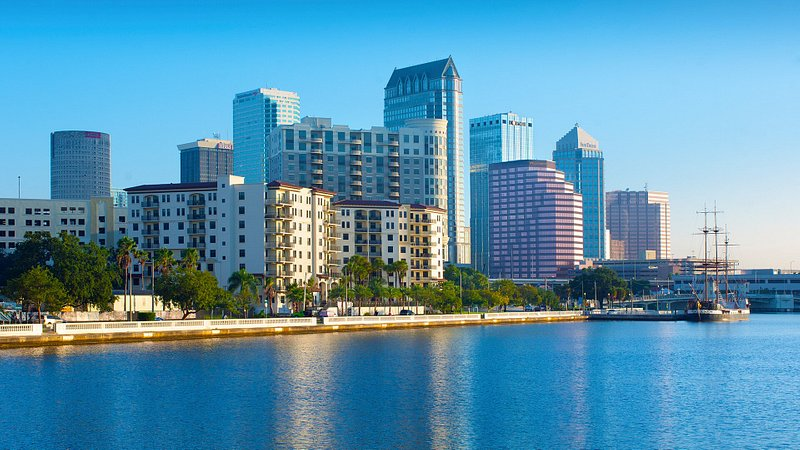
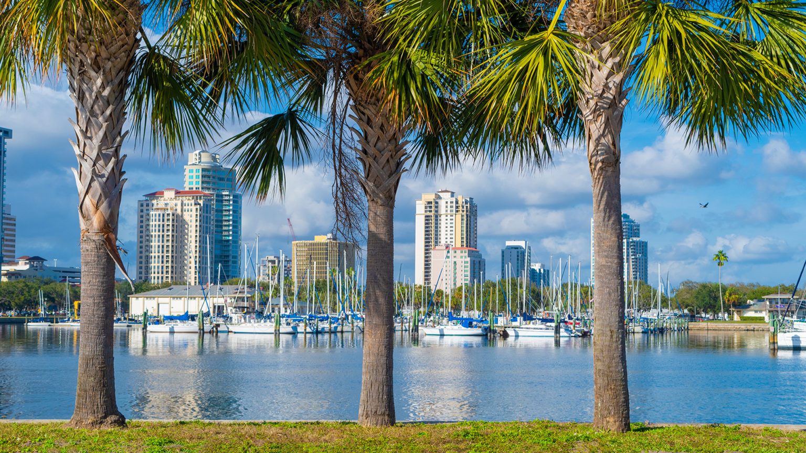
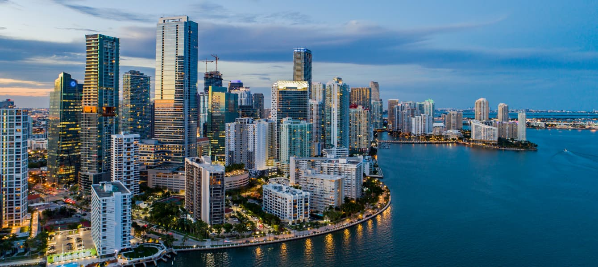
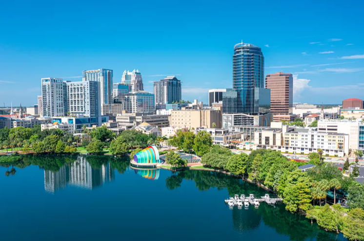

|

|
With around 270 average days of sunshine a year and 8,000 miles of sandy coastline, there’s no surprise that over a hundred million tourists flock to Florida each year. While plenty of those travelers head straight for Miami’s lively South Beach or Orlando’s world-famous theme parks and attractions, there are plenty of other visit-worthy spots across the state. Whether it’s noshing on Cuban cuisine in Tampa’s Ybor City, swooning over early 20th-century mansions in Sarasota, or trekking through wild nature preserves in Naples, there’s plenty to do beyond Miami and Orlando in these six spectacular Floridian cities. |
|
Cosmopolitan, chic, and family-friendly, Tampa is a vibrant waterfront city with eclectic neighborhoods and a trendy culinary scene—plus, it’s in close proximity to some of the best beaches in the country. Home to the oldest cigar-making sites in the U.S.—with cultural influences from around the Spanish-speaking world—start your trip in Tampa with a food-focused walking tour in Ybor City to sample the best neighborhood eats. Plan to come back for dinner in the historic neighborhood at Columbia Restaurant, a Cuban spot that’s been serving up its iconic 1905 salad since, you guessed it: 1905. Thirsty? Try afternoon tea at the upscale Oxford Exchange, or head over to Cigar City Brewing for a brewery tour and a craft beer flight. Bed down at the Travelers' Choice Award–winning Epicurean Hotel or Hotel Haya, and be sure to treat yourself to a day of luxury shopping at International Plaza and Bay Street. There are also ample theme parks around Tampa for family-friendly fun, including Busch Gardens and Adventure Island. |

|
|

|
Three Reasons We Love St. Petersburg
All those sunny days make St. Petersburg the perfect city for outdoor living. Obviously, hitting the beach is a favorite pastime year-round with St. Pete Beach being recognized as one of the best beaches in the country and nearby Fort De Soto Beach being named the number one beach for families in the entire USA! But if you prefer other outdoor activities, there are endless options! With the largest network of cycling and pedestrian trails in the entire Southeast, more than 225 city parks, and 9 nature preserves and wilderness areas, there is literally something for everyone. In the heart of it all, Domus Urbana delivers the complete Downtown St. Petersburg living experience with all your favorite things to do right outside your door |
|
Miami, Florida is a city that embodies the spirit of freedom and adventure. Located in the
southeastern part of the United States, Miami draws millions of visitors each year with its vibrant
culture, stunning beaches, and warm weather.
Miami offers a variety of activities for every interest, including art, Latin American culture, and
beaches.
In this article, we’ll take a closer look at 25 fascinating facts about Miami. From its history and
iconic architecture, we’ll delve into what makes this city so unique and captivating.
|

|
|

|
Dining out, like everything else, is getting more expensive. In fact, according to the personal finance website WalletHub, restaurant prices rose 6.5 percent between August 2022 and August 2023. But that doesn’t mean you can’t still go out and enjoy yourself every once in a while — especially if you happen to live in one of the top foodie cities in the country. WalletHub just released its 2023 report of the Best Foodie Cities in America, which broke down the best, and the most affordable, local food scenes in the U.S. To determine the rankings, the team compared more than 180 of the nation’s largest cities, analyzing each across 28 metrics, including the affordability and accessibility of excellent restaurants, number of food festivals per capita, craft breweries and wineries per capita, restaurant diversity, Michelin stars, and more. 17 Free Things to Do in Orlando After weighing the data, the researchers named Orlando, Florida, the No. 1 food city in America. It won because of the diversity and quality of the restaurants — and for another very important reason: “Orlando has the most ice cream and frozen yogurt shops,” WalletHub noted in the report. Orlando also had some of the most coffee shops per capita and the most specialty-food grocery stores — and scored high in the affordability rankings. Other top food cities in WalletHub's rankings included Portland, Oregon; Sacramento, California; Miami; San Francisco; Tampa, Florida; San Diego; Las Vegas; Austin, Texas; and Seattle. WalletHub’s rankings also spotlighted a few standout cities that didn't make the top 10. St. Louis, the survey noted, has the most gourmet specialty-food stores of any city, and Miami had the most restaurants of any city surveyed. |